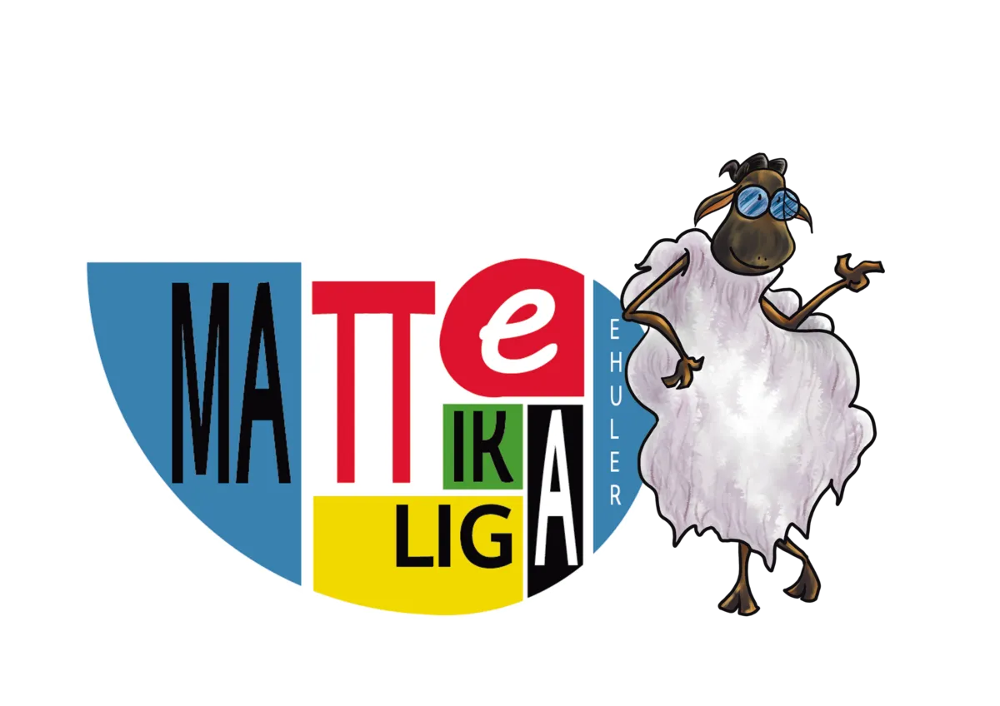
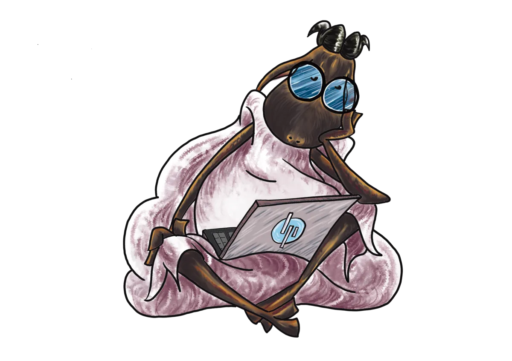

Bienvenido a la competición matemática para estudiantes de 3º y 4º de la ESO y FP básica de institutos vizcaínos.

La Liga Matemática de Institutos organiza su primera edición. Se trata de una competición inspirada en La Liga de fútbol, solo que trasladada a las matemáticas. A lo largo de los meses que dure la competición, los equipos tendrán tanto jornadas de entrenamiento como partidos de competición: cada semana, habrá un taller voluntario en el que todos los participantes se reunirán para trabajar problemas en torno a un mismo tema. Después, cada dos semanas, se enfrentarán en una jornada de competición para poner a prueba lo aprendido. Los talleres se celebrarán los miércoles y los partidos, los sábados.
En vez de meter goles… ¡habrá que resolver problemas! Cada partido constará de 3 ejercicios, que estarán ordenados en dificultad ascendente. Se busca que, con un poco de esfuerzo, todo el mundo pueda resolver el primero, mientras que el último suponga un reto exigente pero alcanzable. El objetivo no es sólo la solución: nos importan los procesos de comprensión, análisis y razonamiento. El equipo que mejor razone acabará siendo el ganador del partido.
Reuníos al menos dos personas del mismo instituto o de centros de la misma zona. No te preocupes si no tienes con quién apuntarte. Dínoslo y te agruparemos con otra persona en tu misma situación.
Del 14 de septiembre al 2 de noviembre de 2026 mediante el formulario de inscripción.
Participa en el taller de los miércoles y usa los materiales de apoyo para profundizar en los contenidos antes de la competición del sábado.
En los partidos se propondrán tres problemas a resolver en 90 minutos. Recibiréis la corrección detallada de vuestras soluciones para seguir mejorando.
Comienza el plazo ordinario para apuntarse a través del formulario de inscripción.
La organización podrá aceptar equipos hasta el sorteo oficial del calendario en casos excepcionales.
El calendario completo de enfrentamientos se fija antes de que empiece la Liga.
Una competición cada dos semanas. Los talleres de preparación se celebrarán cada miércoles.
Los mejores equipos se enfrentaran en la Gran Final de la Liga de Institutos.
El calendario provisional con las fechas orientativas para los partidos y talleres ya está disponible.
Ver el calendarioConsulta los documentos oficiales completos.
La primera edición de la Liga Matemática de Institutos cuenta con la colaboración y el patrocinio de instituciones y entidades comprometidas con la educación matemática del alumnado de Bizkaia.
El alumnado matriculado en el segundo ciclo de ESO en un instituto de Bizkaia, así como el alumnado de ciclos de Formación Profesional Básica (FP Básica) de Bizkaia.
Un mínimo de dos. No se establece un número máximo de integrantes. En cada partido, cada equipo puede convocar entre dos y cinco jugadores de entre todos sus integrantes.
Puedes inscribirte individualmente. EHULER tratará de formar un equipo con personas que se encuentren en la misma situación.
Antes de cada jornada se comunicará si está permitido usar calculadoras u otras herramientas de apoyo. En todo caso, quedan prohibidos los recursos que proporcionen directamente las respuestas — en particular, los sistemas de inteligencia artificial.

Reúne a tu equipo y reserva tu plaza antes del 2 de noviembre de 2026.